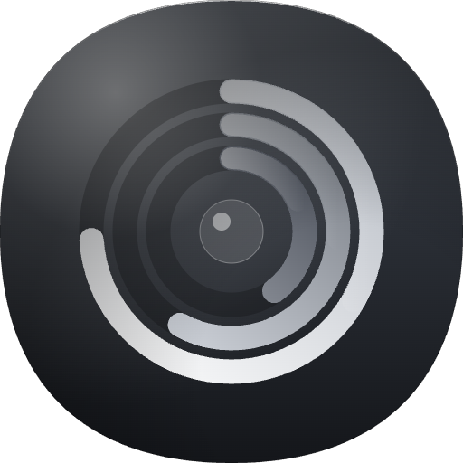

24%
54°
11.2G
3.1M
1.4M
Sun 11 Oct 9:41
MacStats
Your Mac’s vitals, one glance away.
Free, open-source system monitor for the macOS menu bar.
MacStats
System monitor
CPU
24%
user 15% sys 9% idle 76%
Temperature
54°C
Max 61°C
· Nominal
Memory
11.2 GB / 16 GB
CPU
RAM
Disk
Net
Energy
Xcode
38.42%
WindowServer
14.07%
Safari
9.13%
Slack
4.30%